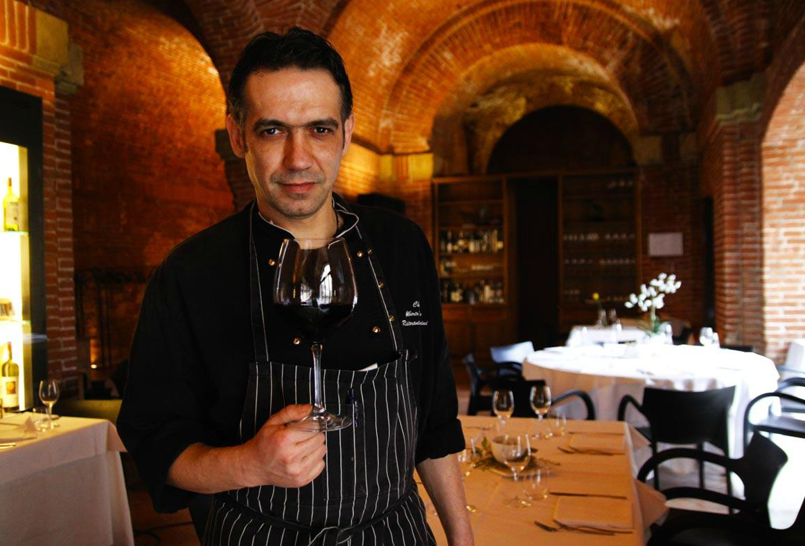
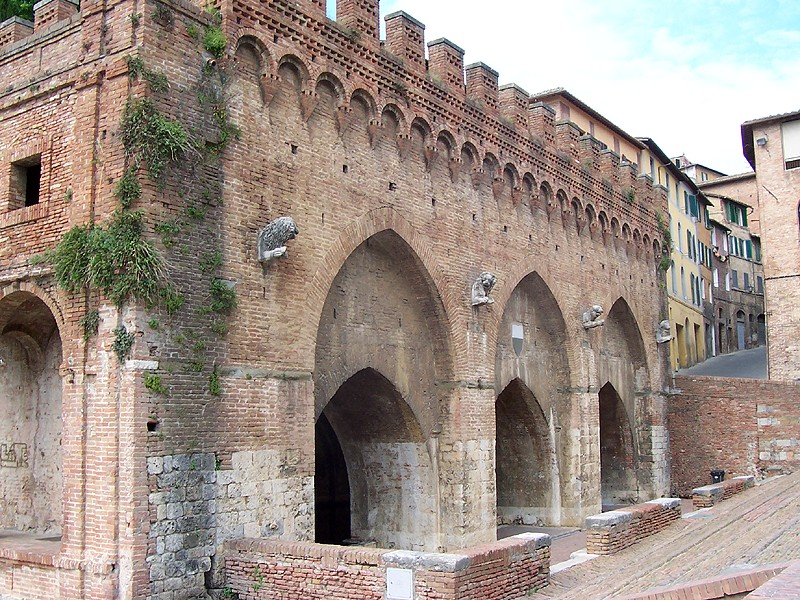
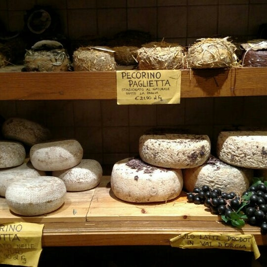
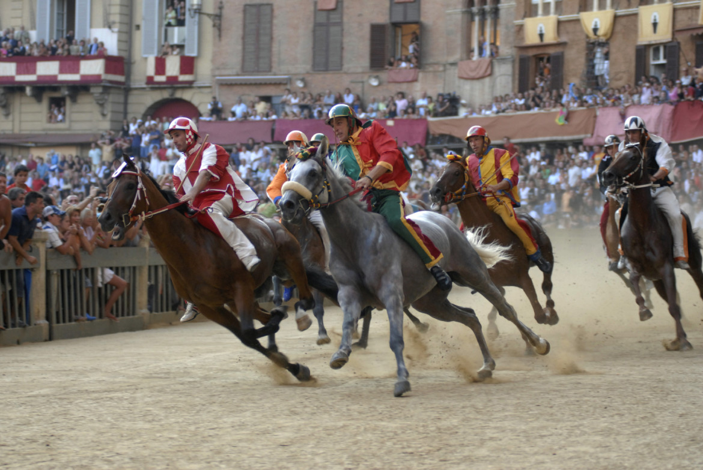
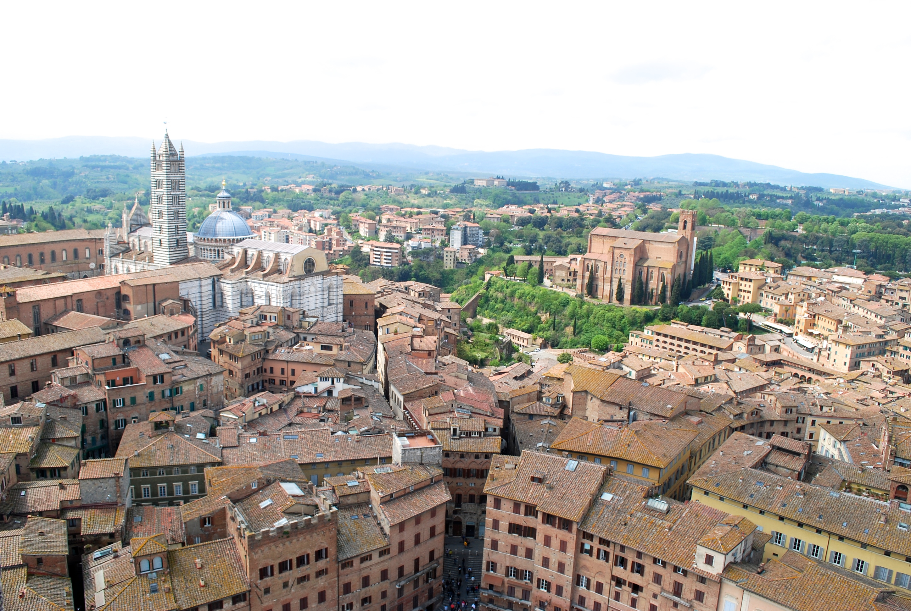
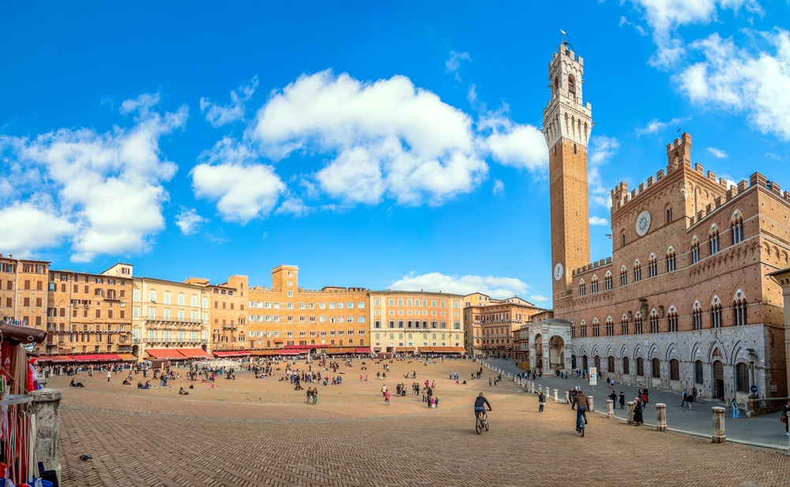

Go once, go twice, go many times.
Because you enjoy old architecture and wine, a lot.
A spring first tapped in the 11th Century, turned public fountain and architectural marvel in the 13th century. Originally simply a source of drinking and cleaning water for Siena, it is nestled behind many more prominent sites. It is thus much more calm, and a nice getaway on a hot Siena day.
You can explore all of Siena on foot, but Tuscany is full of tiny hilltop towns, many of them are very well preserved, and many of them still quite functional. Pienza, for instance, has produced Pecorino cheese for centuries, and continues to this day.
This horse race, which has been happening for centuries, is a cultural phenomenon as well as an all out spectacle. Each jockey and horse represents a neighborhood of Siena, wearing their colors, riding with no saddle, around tight corners in Piazza del Campo. There is usually one crash. Happens twice per summer- once in July, once in August.
The list is too long. They all have open doors, they are all amazing structures and feature exquisite ornate details. Siena Cathedral, and Saint Catherine (beware the head) are highlights.
It's the spiritual center of Siena, and one of the only (or, um, maybe the only?) medieval Italian city that features a government building at it's central Piazza, rather than a major Catholic Cathedral. This was racy for a town that was originally settled between 900 and 400BC.
"Proclaim the truth and do not be silent through fear."